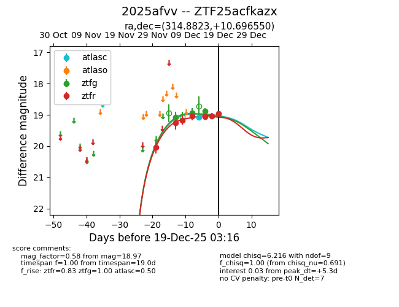
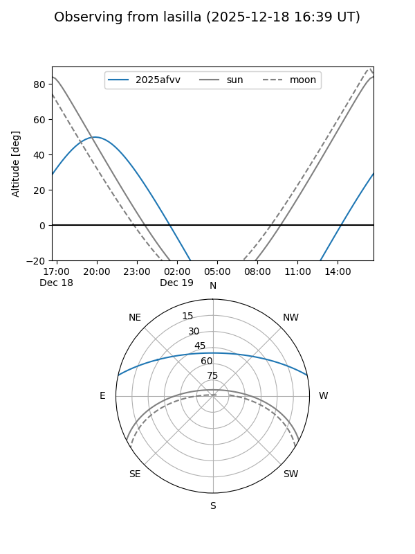
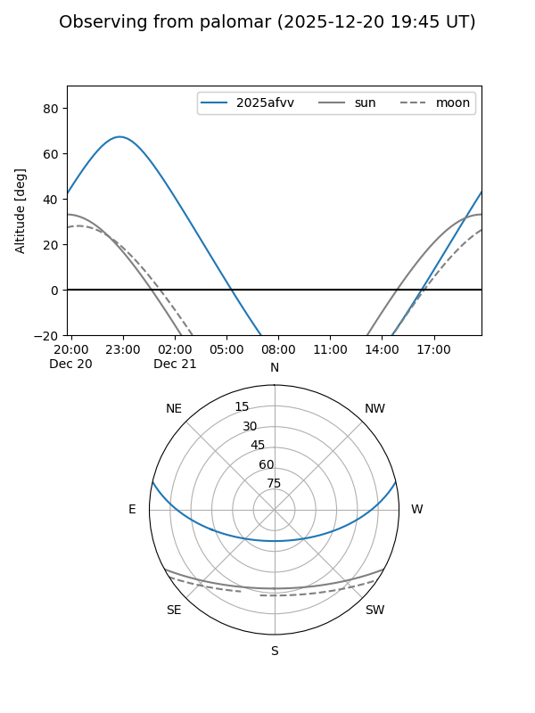
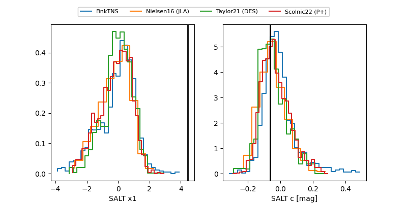

2025afvv
Target 2025afvv at 2025-12-21 03:08
Aliases and brokers:
FINK: fink-portal.org/ZTF25acfkazx
Lasair: lasair-ztf.lsst.ac.uk/objects/ZTF25acfkazx
ALeRCE: alerce.online/object/ZTF25acfkazx
TNS: wis-tns.org/object/2025afvv
YSE: ziggy.ucolick.org/yse/transient_detail/2025afvv
alt names
ZTF25acfkazx (ztf,fink_ztf)
2025afvv (tns,yse)
Coordinates:
equatorial (ra, dec) = 314.8823,+10.69655
equatorial (HMS+DMS) = 20:59:31.74,+10:41:47.58
galactic (l, b) = (58.7340,-22.27719)
Flags:
Photometry:
last atlasc=19.08, ztfg=18.88, ztfr=18.97
1 atlasc, 5 ztfg, 7 ztfr detections
Lightcurve

Visibility


Additional plots
